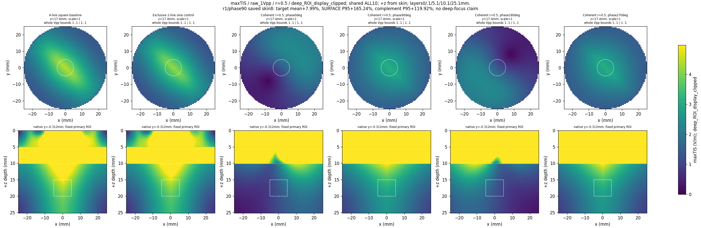
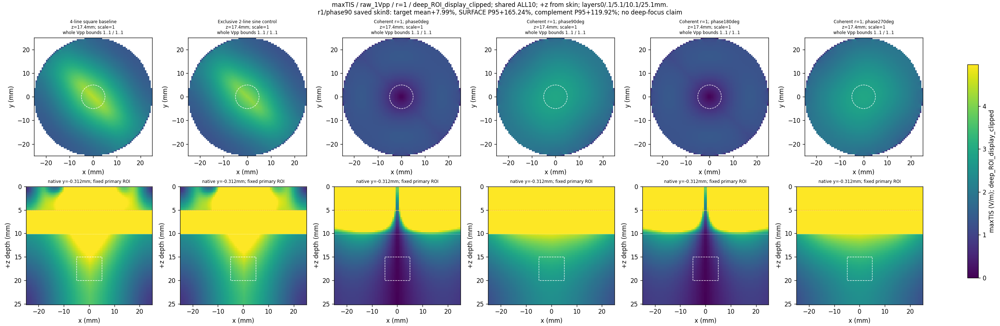
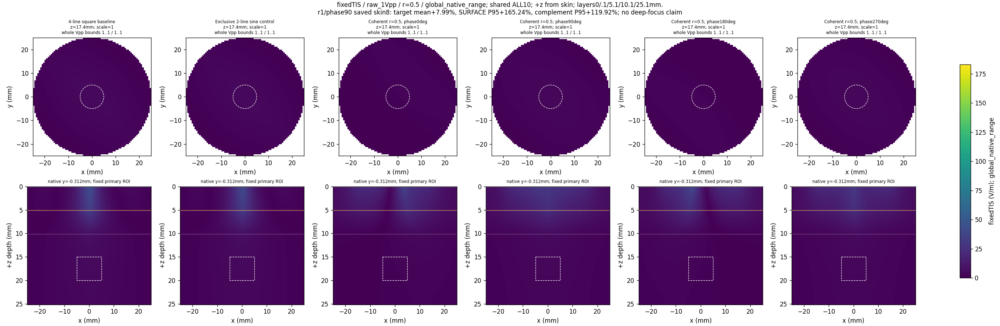
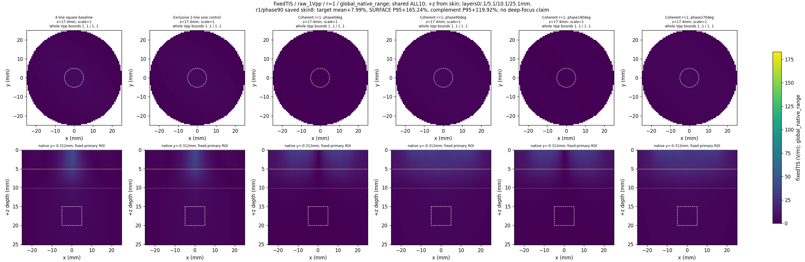
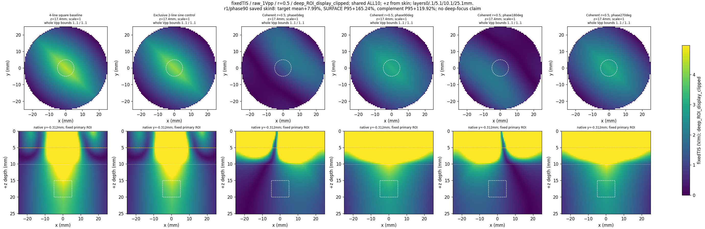
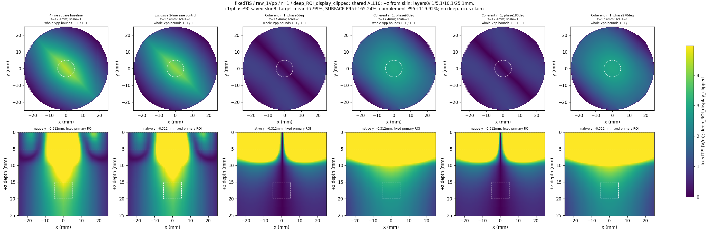
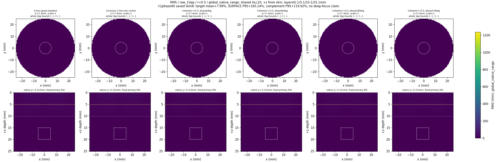
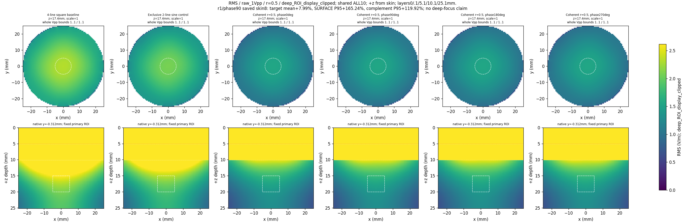
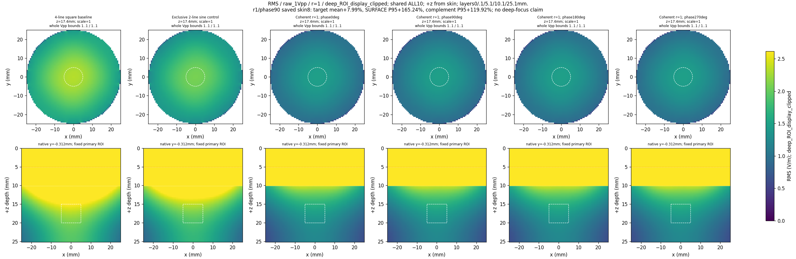

Coherent 구동: 저장된 native scalar 단면
지도 생성 완료 · 후보 미채택 · 전체 수렴 및 실험 검증 미완료
기존 4패드·독립 출력 2개·공통 GND·50 Ω, 동일 격자와 ROI의 저장된 값만 표시합니다. 각 그림의 6열은 원래 square 기준, exclusive sine 대조, 같은 비율의 위상 0°·90°·180°·270° 순서입니다. 두 비율 패널을 포함한 서로 다른 10조건 전체가 같은 색상 범위를 사용합니다.
저장된 skin8 screen에서 r=1·위상90°의 목표 mean은 +7.99%이지만, 표층 0–5 mm P95는 +165.24%, 전체 목표 ROI 밖 P95는 +119.92%입니다. 깊이 집중 성공으로 채택하지 않았습니다.
원래 square는 4개 spectral line, exclusive sine는 출력마다 carrier 하나, coherent 조건은 두 출력 모두에 3000/3030 Hz 두 tone을 인가합니다. 변조와 RMS는 별도 물리량이며, RMS의 spectral line 수 차이도 유지했습니다.
XY는 실제 native 깊이 약17.5 mm, XZ는 중심에 가장 가까운 실제 y 평면입니다. +z는 피부 표면 z=0에서 깊어지는 방향입니다. 흰 점선은 r≤5 mm·깊이15–20 mm 기본 ROI, 주황선은 표층 비표적의 깊이5 mm 경계입니다. 층 경계 고전기장이나 지방층의 색 띠를 깊이 집중으로 해석하지 않습니다.
원래 전체 파형 1 Vpp
최대 방향 TIS 변조 · maxTIS · V/m
Fundamental2carrier maximum over2074 sampled directions; lower bound on continuous-direction maximum
전체 native 범위 — 0–1591.62233165 V/m
범위는 두 비율 패널과 XY/XZ에 공통입니다. 표층 및 모든 비표적 조직을 포함한 전체 native 셀의 표시 범위입니다.
r=0.5; 공통 범위 0–1591.62233165 V/m. 원래 PNG 열기
r=1; 공통 범위 0–1591.62233165 V/m. 원래 PNG 열기
깊은 기본 ROI의 공통 표시 범위 · 범위 밖 색상 clipping — 0–4.97132718867 V/m
범위는 두 비율 패널과 XY/XZ에 공통입니다. 기본 ROI에 양의 부피 가중치가 있는 셀들의 저장값으로 정한 표시 범위이며, 높은 값은 이 그림에서만 색이 포화됩니다. 원래 값은 변경하지 않았습니다.

r=0.5; 공통 범위 0–4.97132718867 V/m. 원래 PNG 열기

r=1; 공통 범위 0–4.97132718867 V/m. 원래 PNG 열기
고정 대각 방향 TIS 변조 · fixedTIS · V/m
Fundamental2carrier modulation in fixed diagonal direction (1/sqrt2,1/sqrt2,0)
전체 native 범위 — 0–183.115052894 V/m
범위는 두 비율 패널과 XY/XZ에 공통입니다. 표층 및 모든 비표적 조직을 포함한 전체 native 셀의 표시 범위입니다.

r=0.5; 공통 범위 0–183.115052894 V/m. 원래 PNG 열기

r=1; 공통 범위 0–183.115052894 V/m. 원래 PNG 열기
깊은 기본 ROI의 공통 표시 범위 · 범위 밖 색상 clipping — 0–4.97132718867 V/m
범위는 두 비율 패널과 XY/XZ에 공통입니다. 기본 ROI에 양의 부피 가중치가 있는 셀들의 저장값으로 정한 표시 범위이며, 높은 값은 이 그림에서만 색이 포화됩니다. 원래 값은 변경하지 않았습니다.

r=0.5; 공통 범위 0–4.97132718867 V/m. 원래 PNG 열기

r=1; 공통 범위 0–4.97132718867 V/m. 원래 PNG 열기
전체 전기장 RMS · RMS · V/m
Stored vector-field RMS; four square spectral lines versus two pure-sine lines; distinct from modulation
전체 native 범위 — 0–1237.56324327 V/m
범위는 두 비율 패널과 XY/XZ에 공통입니다. 표층 및 모든 비표적 조직을 포함한 전체 native 셀의 표시 범위입니다.

r=0.5; 공통 범위 0–1237.56324327 V/m. 원래 PNG 열기
r=1; 공통 범위 0–1237.56324327 V/m. 원래 PNG 열기
깊은 기본 ROI의 공통 표시 범위 · 범위 밖 색상 clipping — 0–2.61871566585 V/m
범위는 두 비율 패널과 XY/XZ에 공통입니다. 기본 ROI에 양의 부피 가중치가 있는 셀들의 저장값으로 정한 표시 범위이며, 높은 값은 이 그림에서만 색이 포화됩니다. 원래 값은 변경하지 않았습니다.

r=0.5; 공통 범위 0–2.61871566585 V/m. 원래 PNG 열기

r=1; 공통 범위 0–2.61871566585 V/m. 원래 PNG 열기
저장된 실제 전체 파형 Vpp 구간
50 Ω 출력저항 전의 전체 파형 max−min 구간입니다. 각 tone의 Vpp 또는 팬텀 접촉 전압을 뜻하지 않습니다. 시간 파형이나 Vpp를 다시 계산하지 않았습니다. 피부·접촉 정규화 값도 저장된 구간과 scale을 그대로 옮겼습니다.
다중 tone의 동기화·전력 흡수/compliance와 측정기 부하는 검증되지 않았습니다. 이 페이지는 실험 검증 또는 생리적 활성화·인체 안전의 판정이 아닙니다.
출처와 상태
이 index는 완료된 지도 요약 JSON만 읽어 만들었습니다. 기존 24 PNG를 연결했으며 배열 decode, 새 렌더링, 정규화 또는 gate 재계산은 수행하지 않았습니다.
요약 SHA256: e3453bbf485ce57e7b4f9420de3de649adbbac9b065f6cb2219c102bb0e500b3
생성 근거: index-build.json
원래 렌더링 소스 commit: afc5e0c331b2355ab9cef443507787725027580b